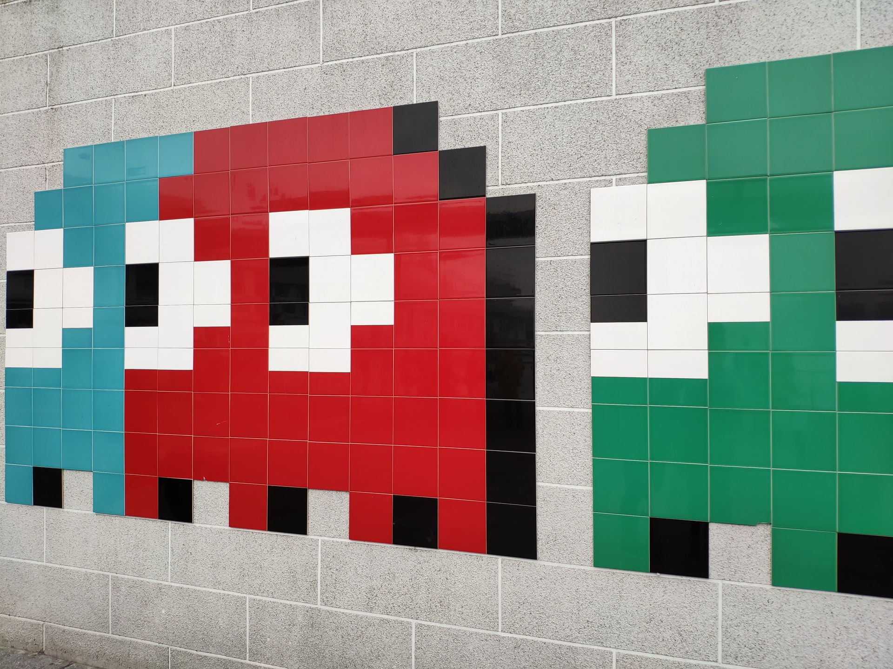

A simple pacman style game

Creating a pacman game using JavaScript
As someone who has always loved pacman this game was very enjoyable to make.
We started by creating the mark up in HMTL. All game variables were defined and then were able to get started creating the grid using a forloop. In order for the pacman variable to be able to move throughout the grid, we introduced eventlisteners and keycodes for each arrow key. math.floor() and math.random() allowed the ghosts to be randomly generated out of their home and to follow different directions. Functions were created in order to ensure that the game would be over if a ghost were to collide with pacman and for points to be added everytime a pacdot was eaten.
Other JavaScript methods used in this project are: